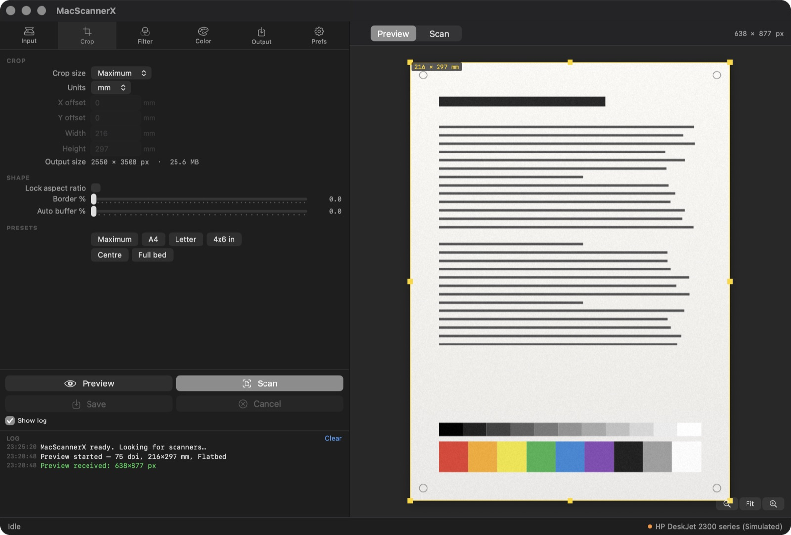
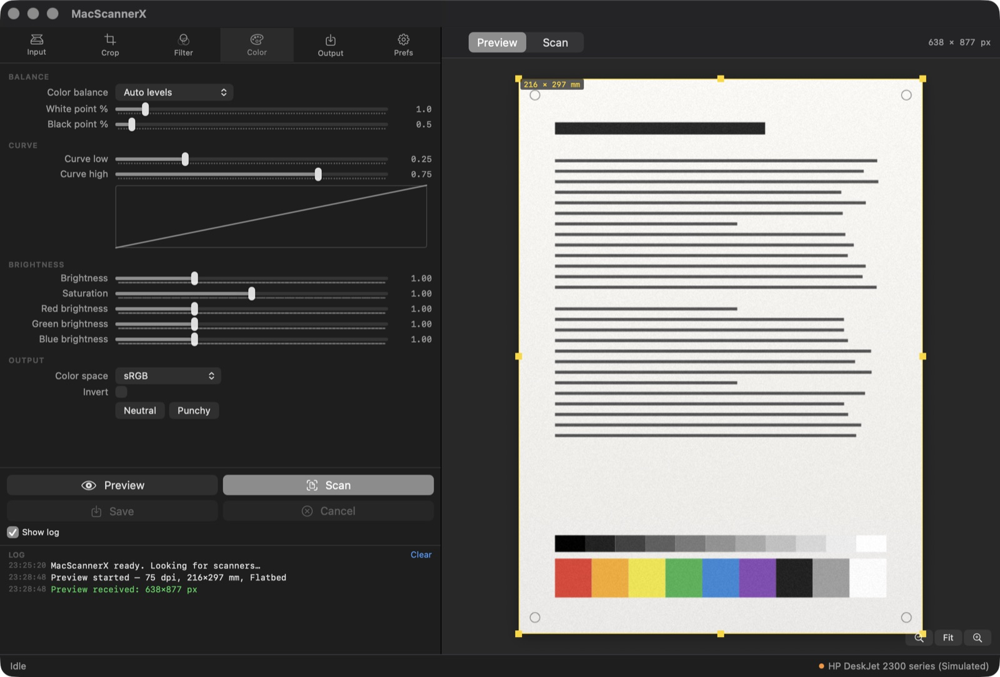

Why MacScannerX
VueScan is excellent software and has supported thousands of scanners for decades. It is also commercial, closed-source and licensed per machine. MacScannerX covers the modern paths for free, with the source in the open.
| Feature | MacScannerX | VueScan |
|---|---|---|
| Price | Free | Paid licence, per machine |
| Source code | Open (Apache-2.0) | Closed |
| Native macOS UI | SwiftUI, universal | Cross-platform toolkit |
| AirScan / eSCL over Wi-Fi | Yes | Yes |
| Image Capture scanners | Yes | Yes |
| HP LEDM over USB, no HP software | Yes | Yes |
| Searchable PDF (OCR) | Yes, via Vision | Yes |
| Film, slides, colour negatives | No | Yes |
| Legacy SCSI / FireWire scanners | No | Yes |
| Windows and Linux | macOS only | Yes |
Short version: if you scan documents and photos on a modern Mac, MacScannerX does the job for nothing. If you scan 35 mm negatives or own a scanner from 2003, buy VueScan — it earns its price there.
Works with your scanner
AirScan / eSCL over Wi-Fi
Most network printers and scanners made since about 2015 — HP, Canon, Epson, Brother, Xerox. Found over Bonjour, driven with standard eSCL. No vendor software, no drivers.
Anything macOS already sees
Any scanner with an Image Capture driver, over USB or shared from another Mac, driven through ImageCaptureCore.
HP printers with no driver at all
Driven directly over HP's LEDM protocol on the printer's USB HTTP interface. This is what makes cheap HP all-in-ones scan on a Mac when Printers & Scanners insists they cannot.
No scanner yet
A built-in simulated device renders a synthetic test page, so every control works before the hardware arrives.
Tested against an HP DeskJet 2300 series over both USB and Wi-Fi.
Every control does real work
Six tabs of options — nothing decorative, nothing that only looks the part.
Input
Device and source, media type, bit depth, scan and preview resolution, samples, rotation, mirror, auto-skew, auto-rotate, batch scanning.
Crop
Auto, maximum, manual, A4, A5, Letter, Legal, 4×6, 5×7, 8×10; offsets, aspect lock, border, and a live output-size and file-size readout.
Filter
Restore colours and fading, descreen by screen frequency, grain reduction, sharpening, line-art threshold.
Color
Auto levels from a real histogram, auto white balance, tone curve with a live graph, brightness, saturation, per-channel gain, colour space.
Output
JPEG, TIFF, PNG, PDF and OCR text; auto-numbered file-name templates, multi-page PDF and TIFF, searchable PDF with a choice of OCR language.
Preview
Draggable crop rectangle with eight resize handles, a timestamped log pane, and a progress bar that reports the real backend stages.


Download and install
macOS will refuse to open MacScannerX on first launch. You will see “MacScannerX.app” Not Opened — Apple could not verify it is free of malware. This is expected.
The app is not signed with an Apple Developer ID and not notarised, because that requires a paid Apple Developer Program membership (US$99/year) that this free project does not have. Nothing is wrong with the download — macOS shows the same dialog for every app that is not notarised. The steps below get you past it once; macOS remembers the choice.
- Open the DMG and drag MacScannerX to Applications.
- Double-click the app. macOS blocks it with the dialog above — click Done.
- Open System Settings → Privacy & Security and scroll down to the Security section. You will see “MacScannerX” was blocked to protect your Mac. Click Open Anyway, then Open Anyway again in the confirmation, and authenticate.
- The app opens. From now on it launches normally.
Prefer the terminal? One command does the same thing by clearing the quarantine flag:
xattr -dr com.apple.quarantine /Applications/MacScannerX.app -
Optional — check the download against the published checksum:
shasum -a 256 -c MacScannerX.dmg.sha256
On macOS 14 Sonoma and earlier, right-click the app → Open → Open also works and skips step 3.
Want to check the download for yourself before trusting it? The source is public, every release is built by GitHub Actions from a tagged commit, and the checksum above is the one CI produced.
Every release is built and self-tested by CI before it is published. Prefer
to build it yourself? ./build.sh release universal dmg needs
only the Command Line Tools —
instructions.
MacScannerX is free and stays free. If it saved your scanner from the drawer, you can support development on Patreon ☕
Frequently asked questions
Is there a free alternative to VueScan for macOS?
MacScannerX is one: free, open source, Apache-2.0. For document and photo scanning on a modern Mac it covers the same ground — USB, AirScan/eSCL over Wi-Fi, and any scanner Image Capture already understands.
Can I scan from an HP DeskJet on macOS without HP Smart?
Yes — that is the case this app was built for. MacScannerX talks to the printer over HP's LEDM protocol on its USB HTTP interface, so nothing from HP needs to be installed. It works on models such as the DeskJet 2300 series that macOS reports as having no scanning support at all.
Does it work with AirScan / eSCL printers from other brands?
Yes. Canon, Epson, Brother, Xerox and others advertise
_uscan._tcp over Bonjour and are driven with the same standard
eSCL calls.
Can it make searchable PDFs?
Yes. Vision OCR runs over the scanned page and the recognised text is drawn invisibly on top, so the PDF stays selectable and searchable. Multi-page PDF and multi-page TIFF are both supported.
Which macOS versions and Macs are supported?
macOS 14 Sonoma or later. The download is a universal binary, native on both Apple silicon and Intel.
Why does macOS say “Apple could not verify MacScannerX is free of malware”?
Because the app is not notarised. Notarisation requires an Apple Developer Program membership at US$99 a year, which this free project does not have. macOS shows the same dialog for every non-notarised app; it is not a judgement about this one. Follow the steps under Download and install — System Settings → Privacy & Security → Open Anyway — and it opens normally from then on.
My printer shows up in Printers & Scanners — why can it not scan?
That entry is a CUPS print queue and proves nothing about
scanning. system_profiler SPPrintersDataType reports the truth
under Scanning support:. On a DeskJet 2300 it says
No — MacScannerX scans from it anyway.
Where are my settings stored?
~/Library/Application Support/MacScannerX/settings.json, as
plain JSON you can read and edit.